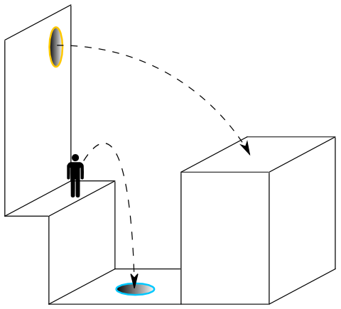
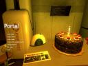
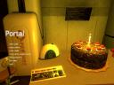

Szerdán megvettem a Half-Life 2 Orange Boxot, ami magába foglalja többek között a Valve Corporation Portal nevű játékát. Ha jól emlékszem, valamikor tavaly ősszel/télen jött ki, már akkor is érdekelt a dolog, hogy milyen is lehet, meg hogy mi is ez egyáltalán. Mint ahogy a HL2, ez is a Valve Source motorját használja, first-person nézetes játék. Ma jutottam oda, hogy kipróbáljam. Kora délután már majdnem a végén jártam, legalábbis azt hittem. Red átjött este, hogy ő is szemügyre vegye, ebből pedig az lett, hogy végigtoltuk, gáz kifejezéssel élve, kipörgettük.

Egyből az juthatna ez ember eszébe, hogy ez megint valami sima klisé FPS. Ez nem igaz. Ott kezdődik a dolog, hogy ellenfelek nagyon nincsenek is, jó-jó akad 1-2 drone és a főellenség, de róla csak később. Egy Chell nevű lánnyal kell végigmenni 19 tesztpályán, ahol egyetlen segítségként egy portálpisztolyt használhatunk. A játék során egy számítógép hangja kísér végig, és mondja, hogy mit szabad, és mit nem kéne. A portálfegyver lényege, hogy átjárókat lehet nyitni a falakon, termeken, folyosókon, de nem csak ennyi. Ha például nyitunk egy portált a falon és egy másikat lent, az alattunk tátongó szakadék szélén, a lenti portálba beugorva végül a faltól akár 10-20 métert is ugorhatunk. Ezt elég nehéz így elmagyarázni, remélem segít az alábbi ábra, de ez a videó mindenképp.

A legelső pályák teljesen altatóak, régi hardkór gémernek kicsit gyengék is voltak. Az első néhány után viszont beindul a játék, és egyre érdekesebb puzzle-okat kell megoldani, hogy túl is éljük azokat. Különösen jó a 18. test chamber végén levő “libikókás” megoldás (azért tettem idézőjelbe, mert semmi köze a libikókához, de nekem az jutott eszembe). Az igazi kaland viszont a 19-es (és egyben utolsó) tesztpályán jön, de mielőtt erre rátérnék, meg kell, hogy említsek még mást is. Nevezetesen, hogy a 18. pályán a gép bemondja, hogy nemsokára véget ér a tesztsorozat, és akkor: “You will be baked, and there will be cake.” Magyarul megsütnek, és akkor lesz süti, húdejó. Az utolsó pálya pedig azzal ér véget, hogy egy mozgó platformon állunk és megyünk a kemencébe (tényleg!), végül sikerült portált nyitni a falba. Szökés! A központi számítógép persze megpróbál lebeszélni, de portálpisztolyunkkal végül sikerül eljutni hozzá, ahol magát a központi gépet szétkapva (azt is szigorúan a portálpisztollyal) sikerül kijutni a szabadba. Itt ér véget a játék, amelyet csodás asciiképekkel tarkított stáblistát láthatunk, miközben a robot énekel, hogy bosszút áll majd rajtunk. Zseniális mapok, részletes kidolgozottság, fantasztikus dizájn, jó zene (habár nagyon kevés). Pár óra játék után teljesen így éreztem magam. Nagyon rövid, ezért az egyért hatalmas fekete pont, ezt leszámítva, háthogymondjam… Kőkemény.
 

Reddel nosztalgiáztunk egyet, hogy régen milyen sok jó játék és játékcég volt, akik jókat csináltak. Ilyen volt például a MicroProse, akiknek a Civilizationt, a Railroad Tycoont, Chris Sawyer akinek Transport Tycoon és RollerCoaster Tycoon sorozatokat (szintén MicroProse, ami később a Hasbro Interactive égisze alatt élt tovább), a Bullfrog és Peter Molyneux, akiknek a Populoust, a Syndicate-et, a Theme Parkot és a Doungeon Keepert, valamint a Maxis, akiknek a millió Sim-játékot, köztük a SimCity-t, SimEarth-öt, SimFarmot, SimTowert satöbbit köszönhetjük. Biztos van még egy pár név és cég, akiket elfelejtettem (ilyen pl. a Doom és a Doom2, amik most jutottak eszembe), sorolhatnám reggelig. Állati jók voltak ezek, és ezek közül majd’ mindegyik játékban építeni kellett valamit, nagyon jó volt mind. (Petya még mostanában is RollerCoaster Tycoonozik, zseniális játék az is.) Életem legjobb játékai viszont a Transport Tycoon és a TT Deluxe mellett a Bethesda Softworks The Elder Scrolls III: Morrowindje és kiegészítői voltak. A Morrowindnek külön postokat lehetne szentelni, hihetetlenül gyönyörű játék volt, nem csak grafikájában, hanem sztorijában és hangulatában is.
Egy legutolsó gondolat még (akár hajnalig is írhatnám ezt a postot), a Transport Tycoon szerelmeseinek, ha valaki még nem hallott volna, akkor figyeljen, mert évek óta létezik már a Transport Tycoon Deluxe felélesztett, nyíltforráskódú változata OpenTTD néven. Nem kell félni, ez nem valami klón, ez tökugyanaz a játék, csak még többet tud a réginél.


{kind=link}